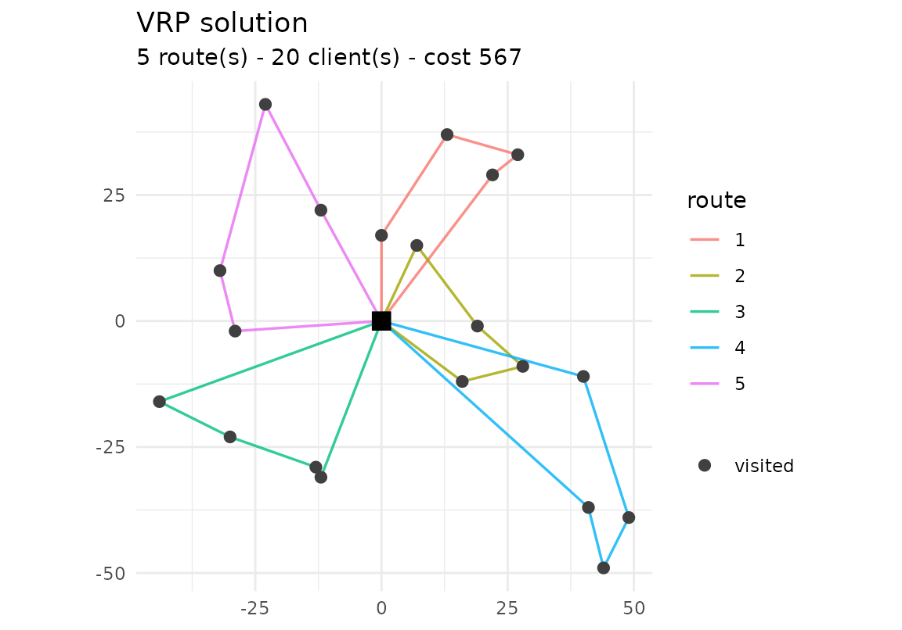

vrpr is a tidyverse-style interface to the PyVRP vehicle-routing solver.
You build a model by piping together depots, clients and vehicle types,
then call vrp_solve(). The heavy lifting runs in PyVRP’s
C++ core (rewired with cpp11), so there is no Python
dependency.
A first CVRP
The capacitated VRP (CVRP) is the base case: clients have a
demand, vehicles a capacity, and we minimise
total distance. The data boundary is a tibble.
set.seed(1)
clients <- tibble::tibble(
x = round(runif(20, -50, 50)),
y = round(runif(20, -50, 50)),
demand = sample(5:15, 20, replace = TRUE)
)
model <- vrp_model() |>
add_depot(x = 0, y = 0) |>
add_clients(clients) |>
add_vehicle_type(num_available = 5, capacity = 50)
res <- vrp_solve(model, stop = max_iterations(500), seed = 1, display = FALSE)
res
#>
#> ── vrpr result ─────────────────────────────────────────────────────────────────
#> • cost 567 - feasible
#> • 5 routes - 20 clients
#> • 500 iterations - 0.16sInspect the result with cost(), routes() (a
tidy long table) and summary():
cost(res)
#> [1] 567
head(routes(res))
#> # A tibble: 6 × 7
#> route_id depot position client vehicle_type start_service wait
#> <int> <int> <int> <int> <int> <dbl> <dbl>
#> 1 1 1 1 11 1 29 0
#> 2 1 1 2 12 1 41 0
#> 3 1 1 3 1 1 75 0
#> 4 1 1 4 19 1 99 0
#> 5 2 1 1 14 1 33 0
#> 6 2 1 2 2 1 35 0
summary(res)
#> # A tibble: 1 × 8
#> cost is_feasible num_routes num_trips num_clients distance iterations runtime
#> <dbl> <lgl> <int> <int> <int> <dbl> <int> <dbl>
#> 1 567 TRUE 5 5 20 567 500 0.160If ggplot2 is installed, plot() draws the
routes:
plot(res)
Stopping criteria
vrp_solve() runs until a stopping criterion fires.
Combine time- and iteration-based limits as needed:
vrp_solve(model, stop = max_runtime(seconds = 10)) # wall-clock budget
vrp_solve(model, stop = max_iterations(5000)) # iteration budget
vrp_solve(model, stop = no_improvement(1000)) # stop when stuckTime windows (VRPTW)
Add tw_early, tw_late and
service columns to the clients to turn the model into a VRP
with time windows. The solver respects the windows, and
routes() reports the start_service and
wait time of each visit.
tw_clients <- tibble::tibble(
x = c(10, 20, 30, 40, 50, 60),
y = 0,
demand = 10,
tw_early = c(0, 30, 60, 90, 120, 150),
tw_late = c(50, 80, 110, 140, 170, 200),
service = 10
)
vrptw <- vrp_model() |>
add_depot(0, 0, tw_early = 0, tw_late = 500) |>
add_clients(tw_clients) |>
add_vehicle_type(num_available = 2, capacity = 60, tw_early = 0, tw_late = 500)
res_tw <- vrp_solve(vrptw, stop = max_iterations(500), seed = 1, display = FALSE)
routes(res_tw)[, c("route_id", "client", "start_service", "wait")]
#> # A tibble: 6 × 4
#> route_id client start_service wait
#> <int> <int> <dbl> <dbl>
#> 1 1 1 50 0
#> 2 1 2 70 0
#> 3 1 3 90 0
#> 4 1 4 110 0
#> 5 1 5 130 0
#> 6 1 6 150 0Heterogeneous fleet
Call add_vehicle_type() several times for a fleet of
different vehicles. Here a cheap type and an expensive one share the
same capacity; the solver prefers the cheaper type and only uses what it
needs.
het <- vrp_model() |>
add_depot(0, 0) |>
add_clients(clients) |>
add_vehicle_type(num_available = 3, capacity = 50, unit_distance_cost = 1) |>
add_vehicle_type(num_available = 3, capacity = 50, unit_distance_cost = 5)
res_het <- vrp_solve(het, stop = max_iterations(500), seed = 1, display = FALSE)
table(routes(res_het)$vehicle_type)
#>
#> 1 2
#> 13 7Multiple depots (MDVRP)
Add several depots and base each vehicle type at one of them with
add_vehicle_type(depot = i). The routes()
output gains a depot column.
mdvrp <- vrp_model() |>
add_depot(x = -50, y = 0) |>
add_depot(x = 50, y = 0) |>
add_clients(tibble::tibble(
x = c(-55, -45, -50, 55, 45, 50),
y = c(5, -5, 10, 5, -5, 8),
demand = 10
)) |>
add_vehicle_type(num_available = 3, capacity = 50, depot = 1) |>
add_vehicle_type(num_available = 3, capacity = 50, depot = 2)
res_md <- vrp_solve(mdvrp, stop = max_iterations(500), seed = 1, display = FALSE)
routes(res_md)[, c("route_id", "depot", "client")]
#> # A tibble: 6 × 3
#> route_id depot client
#> <int> <int> <int>
#> 1 1 1 1
#> 2 1 1 3
#> 3 1 1 2
#> 4 2 2 4
#> 5 2 2 6
#> 6 2 2 5Prize-collecting
Mark clients as optional with required = FALSE and give
them a prize. The solver visits an optional client only
when the prize offsets the routing cost;
unvisited_clients() lists those left out.
add_client_group() defines mutually exclusive
alternatives.
pc <- vrp_model() |>
add_depot(0, 0) |>
add_clients(tibble::tibble(
x = c(5, -5, 0, 100, 100),
y = c(5, -5, 8, 10, -10),
demand = 10,
required = c(TRUE, TRUE, TRUE, FALSE, FALSE),
prize = c(0, 0, 0, 5, 500)
)) |>
add_vehicle_type(num_available = 4, capacity = 50)
res_pc <- vrp_solve(pc, stop = max_iterations(500), seed = 1, display = FALSE)
unvisited_clients(res_pc)
#> [1] 4Reading standard instances
read_vrplib() and read_solomon() read
CVRP/VRPTW instances in the standard VRPLIB/TSPLIB and Solomon formats,
returning a vrpr_model ready to solve.
path <- system.file("extdata", "sample-n6-k2.vrp", package = "vrpr")
read_vrplib(path) |>
vrp_solve(stop = max_iterations(200), seed = 1, display = FALSE) |>
cost()
#> ✔ Read "sample-n6-k2": 5 clients, 1 depot, capacity 30, 2 vehicles.
#> [1] 68Other variants
The same data boundary supports more variants:
-
Pickup & delivery / backhaul – add a
pickupcolumn to clients; the collected load counts toward capacity along the route. -
Multi-trip –
add_vehicle_type(reload_depots = i, max_reloads = k)lets a vehicle return to a depot to reload and run several trips.
See ?add_vehicle_type and ?add_clients for
the full set of options.